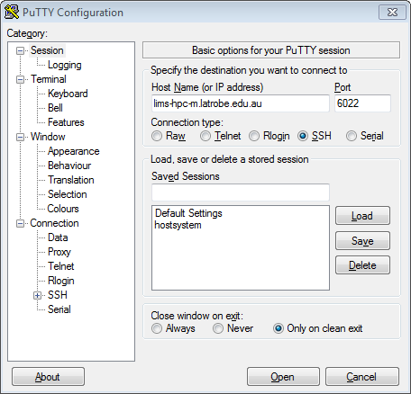

High-Performance Computing¶
A hands-on-workshop covering High-Performance Computing (HPC).
Overview¶
Using High Performance Computing (HPC) resources such as Melbourne Bioinformatics in an effective and efficient manner is key to modern research. This workshop will introduce you to HPC environments and assist you to get on with your research.
Learning Objectives¶
At the end of the course, you will be able to:
- Define ‘What is HPC?’
- Load software modules
- Submit jobs
- Select job queues
- Monitor your jobs progress
- Know what resources you can request
- Select appropriate resources
Requirements¶
You will need a basic understanding of Unix, or you should have attended an Introduction to Unix workshop in the past.
All participants are required to bring their own laptop computers.
Introduction¶
Before we commence the hands-on part of this workshop we will first give a short 30 minute talk to introduce the main concepts of High-Performance Computing. The slides are available if you would like.
Additionally the following reference material is available for later use:
Reference Material
### What is an HPC? An HPC is simply a large collection of server-grade computers working together to solve large problems. * **Big**: HPCs typically have lots of CPUs and Memory and consequently large jobs. * **Shared**: There are usually lots of users making use of it at one time. * **Coordinated**: There is a coordinator program to ensure fair-use between its users. * **Compute Collection**: HPCs use a number of computers at once to solve lots of large jobs. **Figure**: The user (face at top) interacts with their local PC/Laptop through the keyboard and screen. The PC/Laptop will
connect to the Head/Login node of the HPC interactively. The Head/Login node will send the jobs off to the Compute Nodes when
one is available.
### Why use HPCs?
The main reason we use HPCs is because they are quite big. Given their size, they are usually very expensive, however through
sharing the resources the per user/job cost can be kept low.
* **Many CPUs**: HPCs typically have hundreds to tens of thousands of CPUs. Compare this with the 4 or 8 that your PC/Laptop might have.
* **Large Memory**: Hundreds of GBs to multiple TBs of RAM are typical for each node.
* **Efficient use**: Through sharing the resources each user can have access to a very large computer for a period and hand
it back for others to use later.
### Software Modules
There are typically hundreds to thousands of software packages installed on an HPC. Given that each can have its own special
requirements and multiple versions will be made, software on the HPC will most commonly be packaged and only made available
to you when you request it.
* **Packaged**: to avoid conflicts between software, each is packaged up into a module and only used on demand.
* **Loadable**: before using a software module you need to load it.
* **Versions**: given not all users want to use the same version of software (and to compare new results with old you might
need the same version) each version is made into its own software module so you have ultimate control.
### Job Submission
Job Submission is the process of instructing the HPC to perform a task for you. Depending on the HPC software installed on
your HPC, the process of doing so might be different.
* **SLURM**: this workshop uses an HPC that uses the SLURM HPC software. Some common alternatives (not covered) are PBS or
SGE/OGE.
* **Queues (Partition)**: when a job is submitted it is added to a work queue; in SLURM this is called a Partition.
* **Batch**: HPC jobs are not 'interactive'. By this we mean, you can't type input into your job's programs and you won't
immediately see the output that your program prints on the screen.
#### Resources
So that SLURM knows how to schedule and fit jobs around each other, you need to specify what resources your job will use.
That is, you need to tell it how many CPUs, RAM, Nodes (servers), and Time you need.
1. **CPUs**: most software is limited using 1 CPU by default but many can use more than one (or you can run multiple copies at once).
The number of CPUs you specify needs to match how many things your software can do at once.
2. **Memory**: you need to estimate (or guess) how much memory (RAM) your program needs.
3. **Nodes**: most software will only use one of the HPC's Nodes (i.e. one server), but some software can make use of more than
one to solve the problem sooner.
4. **Time**: like when you are scheduling meetings, SLURM needs to know how long each job will take (maximum) so it can organise
other jobs afterwards.
#### Job Types
There are two types of jobs that you can submit:
1. **Shared**: a shared job (as the name suggests) is one that shares a node with other jobs. This is the default and preferred method.
2. **Exclusive**: an exclusive job gets a single (or multiple) nodes to itself. Given this exclusivity, this type of job must know how
to use multiple CPUs as most HPCs have at least 16 CPUs per node.
**Figure**: The user (face at top) interacts with their local PC/Laptop through the keyboard and screen. The PC/Laptop will
connect to the Head/Login node of the HPC interactively. The Head/Login node will send the jobs off to the Compute Nodes when
one is available.
### Why use HPCs?
The main reason we use HPCs is because they are quite big. Given their size, they are usually very expensive, however through
sharing the resources the per user/job cost can be kept low.
* **Many CPUs**: HPCs typically have hundreds to tens of thousands of CPUs. Compare this with the 4 or 8 that your PC/Laptop might have.
* **Large Memory**: Hundreds of GBs to multiple TBs of RAM are typical for each node.
* **Efficient use**: Through sharing the resources each user can have access to a very large computer for a period and hand
it back for others to use later.
### Software Modules
There are typically hundreds to thousands of software packages installed on an HPC. Given that each can have its own special
requirements and multiple versions will be made, software on the HPC will most commonly be packaged and only made available
to you when you request it.
* **Packaged**: to avoid conflicts between software, each is packaged up into a module and only used on demand.
* **Loadable**: before using a software module you need to load it.
* **Versions**: given not all users want to use the same version of software (and to compare new results with old you might
need the same version) each version is made into its own software module so you have ultimate control.
### Job Submission
Job Submission is the process of instructing the HPC to perform a task for you. Depending on the HPC software installed on
your HPC, the process of doing so might be different.
* **SLURM**: this workshop uses an HPC that uses the SLURM HPC software. Some common alternatives (not covered) are PBS or
SGE/OGE.
* **Queues (Partition)**: when a job is submitted it is added to a work queue; in SLURM this is called a Partition.
* **Batch**: HPC jobs are not 'interactive'. By this we mean, you can't type input into your job's programs and you won't
immediately see the output that your program prints on the screen.
#### Resources
So that SLURM knows how to schedule and fit jobs around each other, you need to specify what resources your job will use.
That is, you need to tell it how many CPUs, RAM, Nodes (servers), and Time you need.
1. **CPUs**: most software is limited using 1 CPU by default but many can use more than one (or you can run multiple copies at once).
The number of CPUs you specify needs to match how many things your software can do at once.
2. **Memory**: you need to estimate (or guess) how much memory (RAM) your program needs.
3. **Nodes**: most software will only use one of the HPC's Nodes (i.e. one server), but some software can make use of more than
one to solve the problem sooner.
4. **Time**: like when you are scheduling meetings, SLURM needs to know how long each job will take (maximum) so it can organise
other jobs afterwards.
#### Job Types
There are two types of jobs that you can submit:
1. **Shared**: a shared job (as the name suggests) is one that shares a node with other jobs. This is the default and preferred method.
2. **Exclusive**: an exclusive job gets a single (or multiple) nodes to itself. Given this exclusivity, this type of job must know how
to use multiple CPUs as most HPCs have at least 16 CPUs per node.
Connecting to the HPC¶
To begin this workshop you will need to connect to the HPC. Today we will use barcoo. The computer called barcoo.vlsci.org.au is the one that coordinates all the HPC’s tasks.
Server details:
- host: barcoo.vlsci.org.au
- port: 22
- username: (provided at workshop)
- password: (provided at workshop)
Connection instructions:
Mac OS X / Linux
Both Mac OS X and Linux come with a version of ssh (called OpenSSH) that can be used from the command line. To use OpenSSH you must first start a terminal program on your computer. On OS X the standard terminal is called Terminal, and it is installed by default. On Linux there are many popular terminal programs including: xterm, gnome-terminal, konsole (if you aren't sure, then xterm is a good default). When you've started the terminal you should see a command prompt. To log into *barcoo*, for example, type this command at the prompt and press return (where the word *username* is replaced with your *barcoo* username): *$ ssh username@barcoo.vlsci.org.au* The same procedure works for any other machine where you have an account except that if your Unix computer uses a port other than 22 you will need to specify the port by adding the option *-p PORT* with PORT substituted with the port number. You may be presented with a message along the lines of: Although you should never ignore a warning, this particular one is nothing to be concerned about; type **yes** and then **press enter**. If all goes well you will be asked to enter your password. Assuming you type the correct username and password the system should then display a welcome message, and then present you with a Unix prompt. If you get this far then you are ready to start entering Unix commands and thus begin using the remote computer.Windows
On Microsoft Windows (Vista, 7, 8) we recommend that you use the PuTTY ssh client. PuTTY (putty.exe) can be downloaded from this web page: [http://www.chiark.greenend.org.uk/~sgtatham/putty/download.html](http://www.chiark.greenend.org.uk/~sgtatham/putty/download.html) Documentation for using PuTTY is here: [http://www.chiark.greenend.org.uk/~sgtatham/putty/docs.html](http://www.chiark.greenend.org.uk/~sgtatham/putty/docs.html) When you start PuTTY you should see a window which looks something like this:  To connect to *barcoo* you should enter *barcoo.vlsci.org.au* into the box entitled "Host Name (or IP address)" and *22* in the port, then click on the Open button. All of the settings should remain the same as they were when PuTTY started (which should be the same as they are in the picture above). In some circumstances you will be presented with a window entitled PuTTY Security Alert. It will say something along the lines of *"The server's host key is not cached in the registry"*. This is nothing to worry about, and you should agree to continue (by clicking on Yes). You usually see this message the first time you try to connect to a particular remote computer. If all goes well, a terminal window will open, showing a prompt with the text *"login as:"*. An example terminal window is shown below. You should type your *barcoo* username and press enter. After entering your username you will be prompted for your password. Assuming you type the correct username and password the system should then display a welcome message, and then present you with a Unix prompt. If you get this far then you are ready to start entering Unix commands and thus begin using the remote computer.
Topic 1: Exploring an HPC¶
An HPC (short for ‘High-Performance Computer’) is simply a collection of Server Grade computers that work together to solve large problems.
Figure: Overview of the computers involved when using an HPC. Computer systems are shown in rectangles and arrows represent interactions.
Exercises¶
1.1) What is the contact email for your HPC’s System Administrator?¶
Hint
When you login, you will be presented with a message; this is called the *Message Of The Day* and usually includes lots of useful information. On *barcoo* this includes a list of useful commands, the last login details for your account and the contact email of the system administratorAnswer
Depending on which computer you are working: * SNOWY & BARCOO: help@vlsci.unimelb.edu.au1.2) Run the sinfo command. How many nodes are there in this hpc?¶
Hint
*barcoo[2-4]* is shorthand for *barcoo2 barcoo3 and barcoo4* and *barcoo[1,5]* is shorthand for *barcoo1* and *barcoo5*Additional Hint
Have a look at the NODELIST column. Only count each node once. NOTE: the above list will vary depending on the HPC setup.Answer
The *sinfo* command lists all available partitions and the status of each node within them. If you count up the names of nodes (uniquely) you will get the total nodes in this cluster. * BARCOO: **70** (*barcoo001* through *barcoo070*) * SNOWY: **43** (*snowy001* through *snowy043*)Alternate Method
An automatic (though more complex) way would have been running the following command: Where: * *scontrol show node*: lists details of all nodes (over multiple lines) * *grep NodeName*: only shows the NodeName line * *wc -l*: counts the number of linesTopic 2: Software Modules¶
Up to this point we have been using only standard Unix software packages which are included with Linux/Unix computers. Large computing systems such as HPCs often use a system of modules to load specific software packages (and versions) when needed for the user.
In this topic we will discover what science software modules (tools) are available and load them ready for analysis.
This topic uses the man and module commands heavily
Exercises¶
2.1) What happens if you run the module command without any options / arguments?¶
Hint
Literally type *module* and press *ENTER* key.Answer
**Answer**: It prints an error followed by a list of available options / flags$ module
cmdModule.c(166):ERROR:11: Usage is 'module command [arguments ...] '
Modules Release 3.2.10 2012-12-21 (Copyright GNU GPL v2 1991):
Usage: module [ switches ] [ subcommand ] [subcommand-args ]
Switches:
-H|--help this usage info
-V|--version modules version & configuration options
-f|--force force active dependency resolution
-t|--terse terse format avail and list format
-l|--long long format avail and list format
-h|--human readable format avail and list format
-v|--verbose enable verbose messages
-s|--silent disable verbose messages
-c|--create create caches for avail and apropos
-i|--icase case insensitive
-u|--userlvl <lvl> set user level to (nov[ice],exp[ert],adv[anced])
Available SubCommands and Args:
+ add|load modulefile [modulefile ...]
+ rm|unload modulefile [modulefile ...]
+ switch|swap [modulefile1] modulefile2
+ display|show modulefile [modulefile ...]
+ avail [modulefile [modulefile ...]]
+ use [-a|--append] dir [dir ...]
+ unuse dir [dir ...]
+ update
+ refresh
+ purge
+ list
+ clear
+ help [modulefile [modulefile ...]]
+ whatis [modulefile [modulefile ...]]
+ apropos|keyword string
+ initadd modulefile [modulefile ...]
+ initprepend modulefile [modulefile ...]
+ initrm modulefile [modulefile ...]
+ initswitch modulefile1 modulefile2
+ initlist
+ initclear
2.2) How do you find a list of available software?¶
Hint
Try the *module* command. Don't forget the *man* command to get help for a commandAdditional Hint
Run the command *man module* Use a search to find out about the *avail* subcommand (e.g. /avail<enter>)Answer
The module command is used to show details of software modules (tools). **Answer**:$ module avail
------------------- /usr/share/Modules/modulefiles --------------------
dot module-git module-info modules null use.own
------------------- /usr/local/Modules/modulefiles --------------------
acana/1.60 mafft-gcc/7.215
aftrrad/4.1.20150201 malt/0.1.0
arlequin/3.5.1.3 matplotlib-gcc/1.3.1
...
2.3) How many modules are there starting with ‘f’?¶
Hint
Run the command *man module* Use a search to find out about the *avail* subcommand (e.g. /avail<enter>). You may have to press 'n' a few times to reach the section where the it describes the *avail* subcommand.Additional Hint
> If an argument is given, then each directory in the MODULEPATH is searched for modulefiles > whose pathname match the argument This is a quote from the manual page for the module command explaining the avail subcommand. It uses rather technical language but basically it's saying you can put search terms after the avail subcommand when entering the command.Answer
The man page told us that we could put a search term after *module avail*. **Answer**: 26 modules NOTE: this was correct at time of writing this workshop and might increase over time so don't be alarmed if you got moreAlternate Method
To get a fully automated solution your could do the following command: Where: * *module -l avail*: lists all modules (in long format, i.e. one per line) * *2>&1*: merges output from *standard error* to the *standard output* so it can be feed into grep. For some reason the developers of the *module* command thought it was a good idea to output the module names on the *error* stream rather than the logical *output* stream. * *grep "^f"*: only shows lines beginning with *f* * *wc -l*: counts the number of lines2.4) Run the pear command (without loading it), does it work?¶
Hint
This question is very literalAnswer
The error you see is from BASH, it is complaining that it doesn't know anything about a command called 'pear' **Answer**: No, command not found2.5) How would we load the pear module?¶
Hint
Check the man page for *module* again and look for a subcommand that might load modules; it is quite literal as well.Additional Hint
Run the command *man module* Use a search to find out about the *load* subcommand (e.g. /load<enter>)Answer
2.6) Now it’s *load*ed, run pear again, what does it do?¶
Hint
The paper citation gives a clue.Answer
$ module load pear-gcc/0.9.4
[15:59:19] training21@lims-hpc-m ~ $ pear
____ _____ _ ____
| _ \| ____| / \ | _ \
| |_) | _| / _ \ | |_) |
| __/| |___ / ___ \| _ <
|_| |_____/_/ \_\_| \_\
PEAR v0.9.4 [August 8, 2014] - [+bzlib]
Citation - PEAR: a fast and accurate Illumina Paired-End reAd mergeR
Zhang et al (2014) Bioinformatics 30(5): 614-620 | doi:10.1093/bioinformatics/btt593
... REST REMOVED ...
2.7) List all the loaded modules. How many are there? Where did all the others come from?¶
Hint
Use man to find a subcommand that will list currently loaded modules. We are not really expecting you to be able to answer the 2nd question however if you do get it correct then well-done, that was very tough.Answer
** *List* all the loaded modules. How many are there?** **Answer**: 6 **Where did all the others come from?** You may have noticed when we loaded *pear-gcc* the module called *gcc* was also loaded; this gives a hint as to where the others come from. **Answer**: They are *dependencies*; that is, they are supporting software that is used by the module we loaded. Additionally, some HPC's automatically load some modules for you when you login.2.8) How do you undo the loading of the pear module? List the loaded modules again, did they all disappear?¶
Hint
Computer Scientists are not always inventive with naming commands, try something starting with *un*Answer
**How do you undo the loading of the *pear* module?** **Answer**: the *unload* sub-command removes the named module from our current SSH session. **List the loaded modules again, did they all disapear?** **Answer**: Unfortunately not, the module command is not smart enough to determine if any of the other modules that were loaded are still needed or not so we will need to do it manually (or see next question)2.9) How do you clear ALL loaded modules?¶
Hint
It's easier than running *unload* for all modules This one isn't that straight forward; try a [synonym](https://www.google.com.au/search?q=rid+synonym) of *rid*.Additional Hint
We will *purge* the list of loaded modules.Answer
**Answer**: running the *purge* sub-command will unload all modules you loaded (and all dependencies). **Alternative**: if you close your SSH connection and re-open it the new session will be blank as well.Topic 3: Job Submission¶
Up to this point in the workshop (and the previous Unix workshop) we have only used the head-node of the HPC. While this is OK for small jobs, it’s unworkable for most jobs.
In this topic we will start to learn how to make use of the rest of the HPCs immense compute power
Background¶
On conventional Unix computers (such as the HPC headnode) we enter the commands we want to run at the terminal and see the results directly output in front of us. On an HPC this type of computation will only make use of one node, namely, the Head Node. To make use of the remaining (compute) nodes we need to use the SLURM software package (called an HPC Scheduler). The purpose of SLURM is to manage all user jobs and distribute the available resources (i.e. time on the compute nodes) to each job in a fair manner. You can think of the SLURM software as like an electronic calendar and the user jobs like meetings. Users say to SLURM “I want XX CPUS for YY hours” and SLURM will look at its current bookings and find the next available time it can fit the job.
Terminology:
- Node: a server grade computer which is part of an HPC
- Batch Job: a group of one or more related Unix commands that need to be run (executed) for a user. e.g. run fastqc on all my samples
- Partition (or Queue): a list of jobs that need to be run. There is often more than one partition on an HPC which usually have specific requirements for the jobs that can be added to them. e.g. 8hour will accept jobs less than or equal to 8hours long
- Runtime: the amount of time a job is expected (or actually) runs
- Resources: computation resources that can be given to our jobs in order to run them. e.g. CPU Cores, Memory, and Time.
- Job Script: a special BASH script that SLURM uses to run a job on our behalf once resources become available. Job scripts contain details of the resources that our commands need to run.
- Output (or Results) file: When SLURM runs our batch job it will save the results that would normally be output on the terminal (screen) to a file; this file is called the output file.
- Reservation: much like a reservation for a resturant holds a table for you, the administrator can give you an HPC reservation which holds various resources for a period of time exclusively for you.
Exercises¶
Useful Commands: man, sinfo, cat, sbatch, squeue, cp, module, prime
3.1) Which nodes could a ‘main’ job go on?¶
Hint
Try the *sinfo* commandAdditional Hint
Have a look at the PARTITION and NODELIST columns. The *barcoo[2-4]* is shorthand for *barcoo2 barcoo3 and barcoo4* Note: the output to the sinfo command will look different depending on which HPC you are using and it's current usage levelsAnswer
The *sinfo* command will list the *partitions*. It summaries the nodes by their current status so there may be more than one line with *main* in the partition column. It lists the nodes in shorthand i.e. barcoo[1,3-5] means barcoo1, barcoo3, barcoo4, barcoo5. **Answer**: barcoo001, barcoo002, ..., barcoo070Use the cat command to view the contents of task01, task02 and task03 job script
3.2) How many cpu cores will each ask for?¶
Hint
Lookup the man page for *sbatch* command. *sbatch*'s options match up with the *#SBATCH* comments at the top of each job script. Some will be affected by more than one optionAdditional Hint
**Non-exclusive (shared) jobs**: It is *--cpus-per-task x --ntasks* but if *--ntasks* is not present it defaults to 1 so it's *--cpus-per-task x 1* **Exclusive jobs**: The *--nodes* options tells us how many nodes we ask for and the *--exclusive* option says give us all it has. This one is a bit tricky as we don't really know until it runs.Answer
**Answer**: * task01: **1 cpu core** * task02: **6 cpu cores** * task03: **at least 1** as this has requested all cpu cores on the node its running on (*--exclusive*). However, since we know that all nodes on *barcoo* have 16, we know it will get 16.3.3) What about total memory?¶
Hint
Lookup the man page for *sbatch* command. *sbatch*'s options match up with the *#SBATCH* comments at the top of each job script. Some will be affected by more than one optionAdditional Hint
The *--mem-per-cpu* OR *--mem* options are holding the answer to total memory. For task01 and task02 the calculation is *--mem-per-cpu x --cpus-per-task x --ntasks* For task03, like with the cpus cores question, we get all the memory available on the node we get allocatedAnswer
The *--mem-per-cpu* OR *--mem* options are holding the answer to total memory. For task01 and task02 the calculation is *--mem-per-cpu x --ntasks x --cpus-per-task* For task03, like with the cpus cores question, we get all the memory available on the node we get allocated3.4) How long can each run for?¶
Hint
Use the *man sbatch* command to look up the time specification. If you search for *--time* it will describe the formats it uses (i.e. type */--time* and press enter)Answer
The *--time* option is what tells slurm how long your job will run for. **Answer**: * task01: requests **30:00 (30mins 0secs)**, uses ~30secs * task02: requests **5:00 (5mins 0secs)**, uses ~5secs * task03: requests **1:00 (1min 0secs)**, uses ~30secs3.5) Is this maximum, minimum or both runtime?¶
Hint
Use the *man sbatch* command to look up the time specification. If you search for *--time* it will describe the formats it uses (i.e. type */--time* and press enter)Answer
This is a maximum time. Your job may finish early, at which point it hands back the resources for the next job. However if it tries to run longer the HPC will terminate the job.3.6) Calculate the –time specification for the following runtimes:¶
- 1h30m:–time=
- 1m20s:–time=
- 1.5days:–time=
- 30m:–time=
Hint
Use the *man sbatch* command to look up the time specification. If you search for *--time* it will describe the formats it uses (i.e. type */--time* and press enter)Answer
1. 1h30m:--time=01:30:00 (alternatively: 0-01:30) 2. 1m20s:--time=01:20 3. 1.5days:--time=1-12 4. 30m:--time=303.7) What do the following –time specifications mean?¶
- –time=12-00:20
- –time=45
- –time=00:30
Hint
Use the *man sbatch* command to look up the time specification. If you search for *--time* it will describe the formats it uses (i.e. type */--time* and press enter)Answer
1. --time=12-00:2012 days and 20 minutes 2. --time=4545 minutes 3. --time=00:3030 secondsReservations¶
Before we continue, a quick note on reservations. Reservations are not normally needed however sometimes we will, particularly when the HPC is busy. To make use of a reservation you need to know its name and provide it with the –reservation option
Today we use the training reservation so that we have resources available to run our jobs. Your jobs will need to contain the line:
#SBATCH –reservation=training
Now use sbatch to submit the task01 job:
3.8) What job id was your job given?¶
Hint
Use the man page for the sbatch command. The *Synopsis* at the top will give you an idea how to run it.Answer
**Answer**: it's unique for each job; in the above example mine was *9998*3.9) Which node did your job go on?¶
Hint
The *squeue* command shows you the currently running jobs. If it's been longer than 30 seconds since you submitted it you might have to resubmit it.Answer
Use the *squeue* command to show all jobs. Search for your *jobid* and look in the *NODELIST* column.Advanced¶
3.10) Make a copy of task01 and call it prime_numbers. Make it load the training module and use the prime command to calculate prime numbers for 20 seconds.¶
Hint
You can find the *prime* command in the *training-gcc/1.0* moduleAnswer
The key points to change in the task01 script are: 1. adding the *module load training-gcc/1.0* 2. replacing the *sleep* (and *echo*) statements with a call to *prime 20*.#!/bin/bash
#SBATCH --cpus-per-task=1
#SBATCH --mem-per-cpu=1024
#SBATCH --partition=PARTITION
#SBATCH --time=30:00
#SBATCH --reservation=RESERVATION
module load training-gcc/1.0
echo "Starting at: $(date)"
prime 20
echo "Finished at: $(date)"
3.11) Submit the job. What was the largest prime number it found in 20 seconds?¶
Hint
The output from the program will provide the results that we are after. For HPC jobs this will be placed in the *SLURM output file*; this is called *slurm-JOBID.out* where JOBID is replaced by the actual job id.Answer
You should get results similar to below however the actual numbers will vary as amount of computations performed will be affected by the amount of other jobs running on the HPC3.12) Modify your prime_numbers script to notify you via email when it starts and ends. Submit it again.¶
- Did it start immediately or have some delay?
- How long did it actually run for?
Hint
There are two options that you will need to set. See sbatch manpage for details.Additional Hint
Both start with *--mail*Answer
#!/bin/bash
#SBATCH --cpus-per-task=1
#SBATCH --mem-per-cpu=1024
#SBATCH --partition=TRAINING
#SBATCH --time=30:00
#SBATCH --reservation=RESERVATION
#SBATCH --mail-user=name@email.address
#SBATCH --mail-type=ALL
module load training/1.0
echo "Starting at: $(date)"
prime 20
echo "Finished at: $(date)"
Topic 4: Job Monitoring¶
It is often difficult to predict how a software tool may utilise HPC System Resources (CPU/Memory) as it can vary quite widely based on a number of factors (data set, number of CPU’s, processing step etc.).
In this topic we will cover some of the tools that are available that enable you to watch what is happening so we can make better predictions in the future.
Exercises¶
4.1) What does the top command show?¶
Hint
When all else fails, try *man*; specifically, the description sectionAnswer
**Answer**: in lay-person terms *"Continually updating CPU and Memory usage"*Run the top command. Above the black line it shows some system-wide statistics and below are statistics specific to a single process (a.k.a, tasks OR software applications).
4.2) How much total memory does this HPC (head-node) have?¶
Hint
This would be a system-wide statistic.Answer
**Answer**: If you look at the first value on the *Mem* line (line 4) it will tell you the total memory on this computer (node). * **BARCOO**: 65942760k or ~64 GigaBytes * **SNOWY**: 132035040k or ~128 GigaBytes To transfer from kB to MB you divide by 1024 and MB to GB by 1024 again.4.3) What is the current total CPU usage?¶
Hint
This might be easier to work out what is not used and subtract it from 100%Additional Hint
*Idle* is another term for not used (or *id* for short)Answer
**Answer**: If you subtract the *%id* value (4th value on Cpu(s) line) from 100% you will get the total CPU Usage4.4) What column does it appear to be sorting the processes by? Is this low-to-high OR high-to-low?¶
Hint
It's not PID but from time to time it might be ordered sequentially.Answer
**Answer**: *%CPU* which gives you an indication of how much CPU time each process uses and sorted high-to-low.Add up the top few CPU usages of processes and compare this to the system-wide CPU usage at that time. NOTE: you may need to quit top (by pressing q) so you can compare before it updates.
4.5) Why might the numbers disagree?¶
Hint
It might have something to do with the total number of CPU Cores on the system.Answer
**Answer**: *%CPU* column gives you an indication of how much this process uses of 1 CPU Core, where as the system-wide values at the top are exactly that, how much the entire system is utilised. i.e. if you could see all processes in *top* (excluding round errors) they would add up 100% x the number of cpu cores available. On BARCOO it is 0-2400% and SNOWY it is 0-3200% for individual processes.4.6) What command-line flag instructs top to sort results by %MEM?¶
Can you think of a reason that this might be useful?
Hint
Use the *top* manpage.Additional Hint
*"m is for memory!"*Answer
**Answer**: *top -m* will cause *top* to sort the processes by memory usage. **Can you think of a reason that this might be useful?** Your program might be using a lot of memory and you want to know how much; by sorting by memory will cause your program to stay at the top.4.7) Run “top -c”. What does it do? How might this be helpful?¶
Hint
Use the *top* manpage.Additional Hint
*"c is for complete!"* *"c is also for command!"* which is another name for programAnswer
**What does it do?** It changes the COMMAND column (right most) to show the complete command (or as much that fits) including the flags and options. **How might this be helpful?** Sometimes you might be running a lot of commands with the same name that only differ by the command-line options. In this case it is hard to tell which ones are still running unless you use the *-c* flag to show the complete command. **NOTE**: If *top* is running you can press the *c* key to toggle show/hide complete command4.8) How can you get top to only show your processes? Why might this be useful?¶
Hint
Use the *top* manpage.Additional Hint
*"u is for user[name]!"*Answer
**How can you get *top* to only show your processes?** **Answer 1**: *top -u YOURUSERNAME* **Answer 2**: while running *top* press the *u* key, type YOURUSERNAME and pressTopic 5: All Together¶
This topic will allow you to put all the skills that you learnt in this workshop to the test. You might need to refer back to the earlier topics if you have forgotten how to do these tasks.
Overview:
- Write jobscript
- Load/use software module
- Submit job
- Monitor job
Task 1: Write a job script¶
Write a job script that requests the following resources:
- Filename: monINITIALS.slurm
- where INITIALS is replaced with your initials. e.g. for me it would be monAR.slurm
- Tasks: 1
- CPUs: 1
- Partition: main
- Time: 5 mins
- Memory: 1 GB (remember to specify it in MB)
- Reservation: training
Task 2: Load/use software module¶
Edit your job script so that it:
- Loads the training-gcc/1.0 module
- Runs the fakejob command with your name as the first parameter.
- FYI: fakejob is a command that was made to demonstrate what real commands might do in terms of CPU and Memory usage. It does not perform any useful task; if you must know, it just calculates prime numbers for 5 minutes and consumes some memory
Task 3: Submit job¶
- Use sbatch to submit the job to the HPC.
- Note down the job id it was given (for later).
- Use squeue (or qs) to check that is started ok.
- When it starts check which compute node it is running on (for the next task).
Task 4: Monitor the job¶
Use the top command to check how much CPU and Memory the job is using. Given that SLURM is running the job on your behalf on one of the compute nodes, top won’t be able to see the job. To be able to use top, you will first need to login to the compute node that is running your job.
To login:
Where XXX is the actual node number you were allocated (See task 3.4).
You are now connected from your computer to barcoo which is connected to barcooXXX.
+---------------+ +------------+ +------------+
| YOUR COMPUTER | -- SSH --> | BARCOO | -- SSH --> | BARCOOXXX |
+---------------+ +------------+ +------------+
You can tell which node you are on by the text in the prompt
Once logged in to the relevent compute node you can run top to view your job. Remember the u and c options we learnt earlier; they will be helpful here when everyone is running the same jobs.
How does the CPU and Memory usage change over time?¶
Hint
It should vary (within the limits you set in the job script)Answer
The *fakejob* program should vary its CPU usage between 50 and 100% CPU and 500 and 1000MB of memory. The percentage that it shows is based on the total memory of the node that runs your job; check Topic 4, Question 4.2 to remember how to find the total memory.Finished¶
Well done, you learnt a lot over the last 5 topics and you should be proud of your achievement; it was a lot to take in.
From here you should be comfortable to begin submitting real jobs to the HPC (in your real account, not the training one).
You will no-doubt forget a lot of what you learnt here so I encourage you to save a link to this workshop for later reference.
Thank you for your attendance, please don’t forget to complete the training survey and return it to the workshop facilitators.